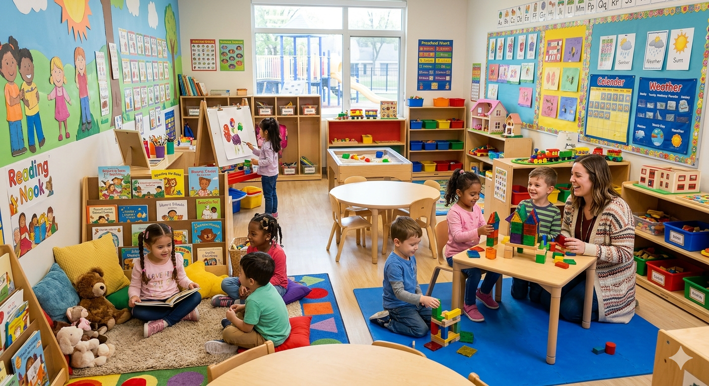
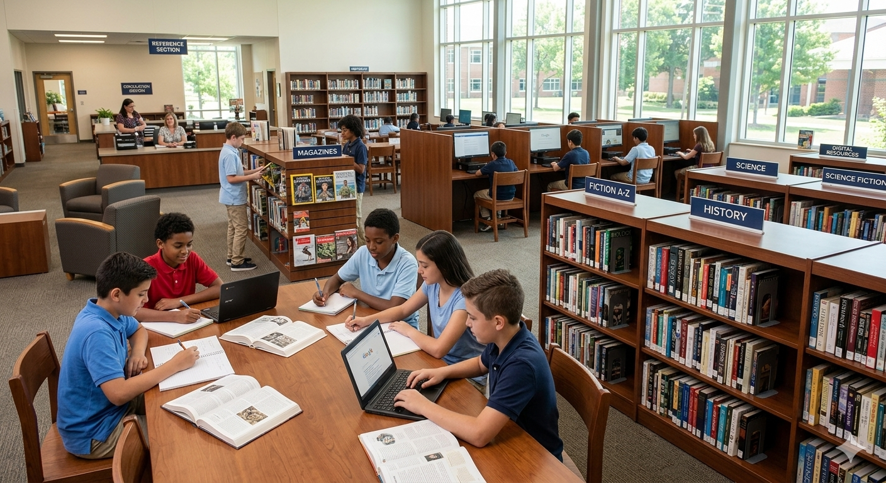
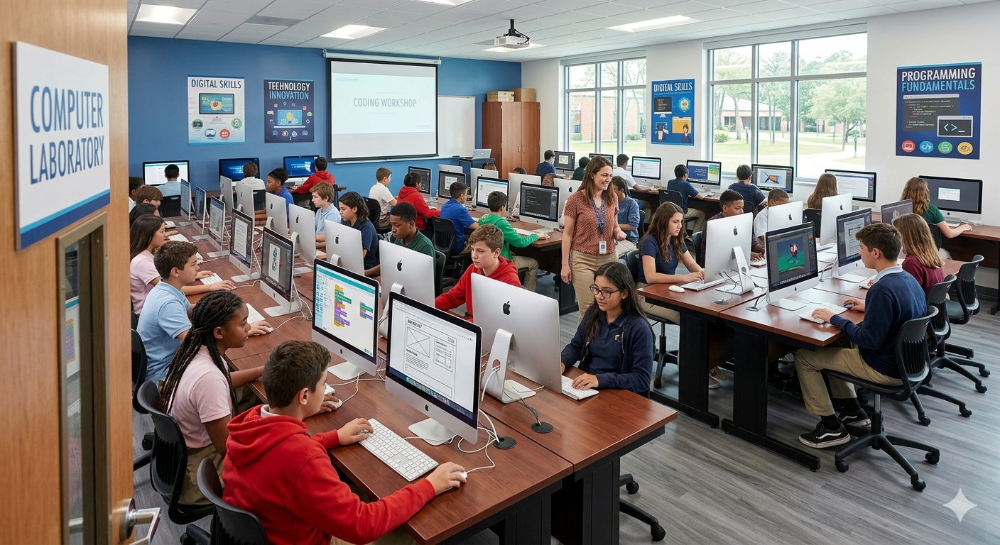
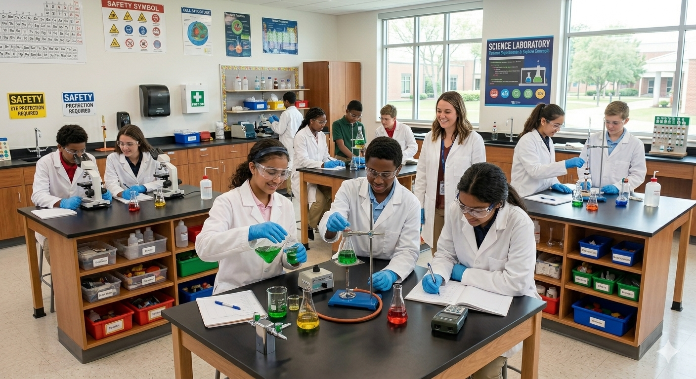
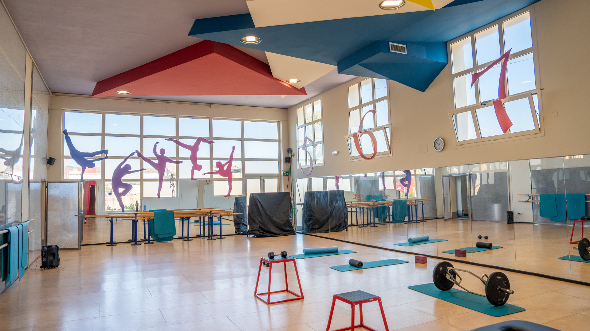
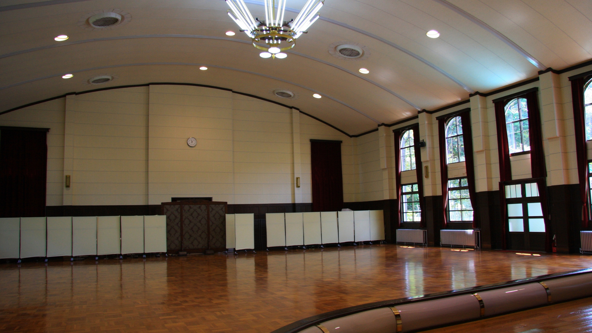
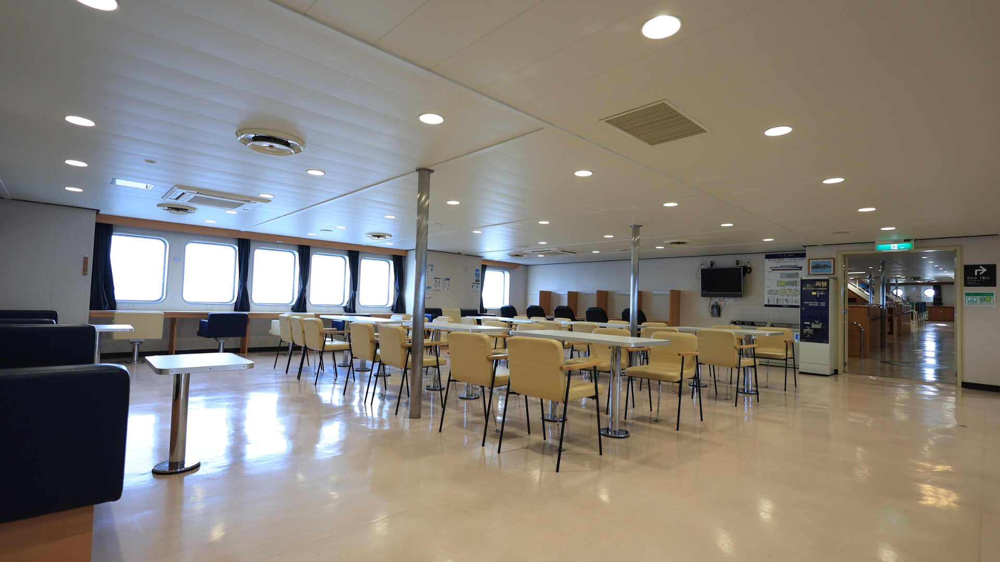
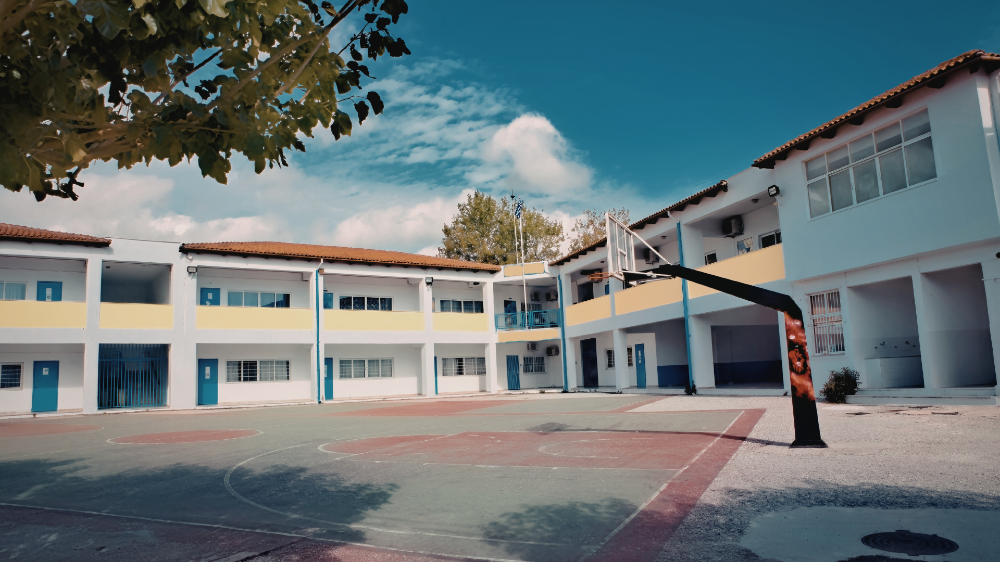
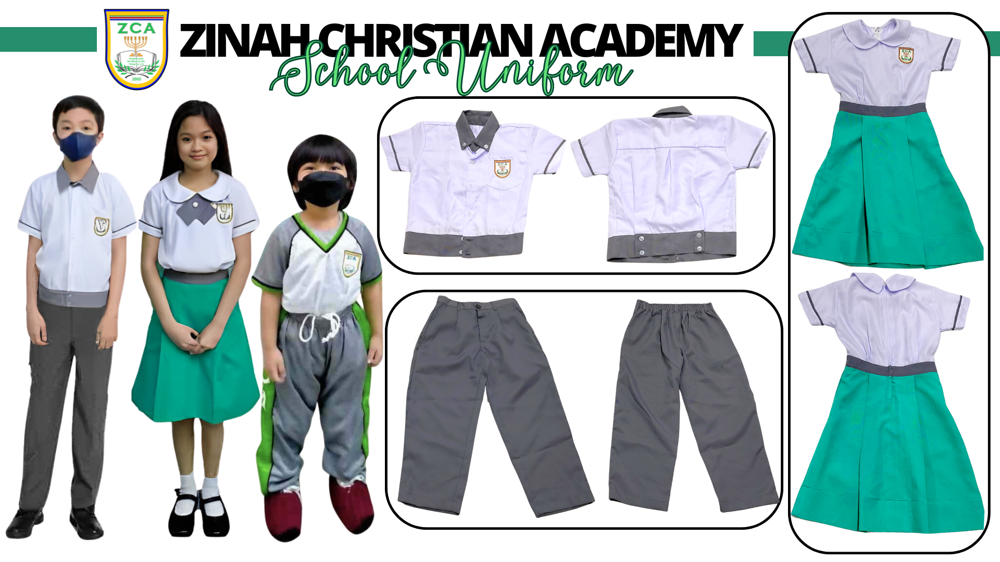
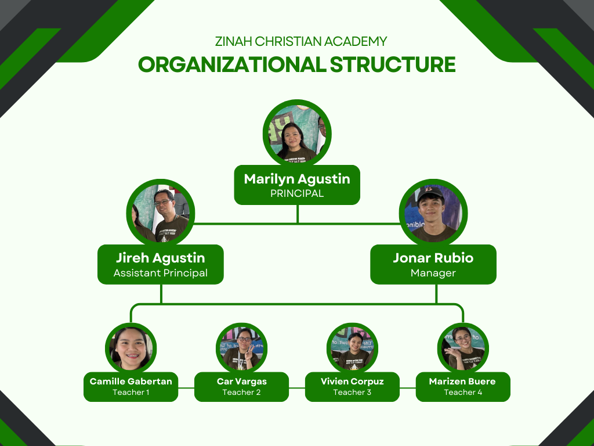

We are committed to providing quality Christian education that nurtures academic excellence and strong moral values in every student.
Our certified, dedicated educators create a warm, engaging classroom environment where every student is seen and supported.
We maintain a secure, inclusive campus where students feel safe to learn, grow, and express themselves freely.
Our rigorous yet balanced curriculum prepares students for higher learning with a strong foundation in all core subjects.
Beyond academics, we shape character, faith, and leadership — nurturing every dimension of a child's potential.
Students
Certified Teachers
Graduation Rate
Founded in 1992, Zinah Christian Academy has been dedicated to nurturing young minds and shaping future leaders through academic excellence, strong moral values, and a supportive learning environment.
Modern classrooms, well-equipped science and computer labs, a vibrant library, and spacious sports facilities.
A teaching philosophy that balances rigorous academics with character development, fostering creativity and critical thinking.
Spiritual growth is woven into every aspect of school life, producing well-rounded graduates of faith and integrity.
"We believe every child has unique potential. Our mission is to guide, inspire, and empower each student to thrive academically, socially, and spiritually."
A Christ-centered program that develops students academically, spiritually, and holistically — from Pre-Kinder through Grade 6.
Zinah Christian Academy provides a Christ-centered education designed to develop students academically, spiritually, socially, and physically. The curriculum integrates biblical principles with academic subjects to nurture learners who are knowledgeable, responsible, and guided by Christian values.
Our program ensures that learning is organized, balanced, and aligned with the goals of the school — combining rigorous academics with character formation every step of the way.
Core subjects such as language, mathematics, science, and social studies are complemented by enrichment subjects like arts, physical education, and technology for a truly holistic education.
Biblical stories, teachings, and Christian principles that guide faith and daily life.
Memorizing key Bible verses to strengthen faith and encourage moral character.
Daily prayer and devotions to develop a personal relationship with God.
Regular chapel gatherings for worship, teaching, and community fellowship.
Guiding students to develop integrity, kindness, responsibility, and leadership.
Students appreciate and understand different forms of music, learning rhythm, melody, and harmony. They participate in singing, playing instruments, and performing in school activities.
Students express their creativity through drawing, coloring, painting, and craft projects using various materials, developing fine motor skills, patience, and appreciation for art.
Through games, sports, and activities, students develop strength, coordination, flexibility, and teamwork while learning the importance of an active and healthy lifestyle.
Students learn typing, research, creating documents, and using educational software while practicing safe and ethical use of digital tools.
Students develop leadership skills through classroom responsibilities, group activities, and school programs. They learn to guide others, make responsible decisions, and serve as positive role models — building confidence, initiative, and responsibility.
Through group activities and school events, students learn communication, respect for different ideas, and cooperation in achieving common goals — building strong relationships and unity.
Students are taught accountability for their actions, completing tasks on time, and following school rules. The school encourages self-discipline, good study habits, and respect for authority.
Through outreach programs and service projects, students learn the value of compassion, kindness, and helping others. These experiences develop empathy, social awareness, and a heart for serving the community.
Students develop reading, writing, grammar, spelling, and vocabulary through stories, discussions, and writing activities that build communication and critical thinking.
Strengthens logical thinking and problem-solving from number concepts to geometry and practical applications of math in everyday life.
Encourages curiosity and exploration of the natural world through lessons and simple experiments covering living things, the environment, and energy.
Students learn about communities, history, culture, and geography, developing responsible citizenship and respect for diversity.
Helps students grow spiritually by learning biblical teachings and Christian values, applying faith-based principles in daily life.
The guiding principles that shape every decision, lesson, and relationship at Zinah Christian Academy.
To provide a Christ-centered education that nurtures the intellectual, spiritual, and moral growth of every student, equipping them with the knowledge, values, and skills to excel academically, lead with integrity, and serve their communities.
To be a leading Christian academy recognized for academic excellence, character development, and spiritual formation, where students are empowered to become responsible, compassionate, and confident leaders in a changing world.
Stay updated with the latest happenings and celebrations at Zinah Christian Academy.
Join our 2026 Marriage & Parenting Seminar on Feb 7, 9AM–12NN at Jollibee Petron C5! Open to all — ₱375 (lunch included).
A fun and glamorous pageant showcasing the confidence, talent, and charm of our students.
Friendly competition and quality family time as our houses face off in exciting games and activities.
Honoring the hard work and achievements of our students as they reach important milestones.
Click any event to view details. Navigate months using the arrows.
Explore our facilities, uniform policy, programs, and organizational structure.

Modern and comfortable classrooms designed to create a positive and inspiring learning environment.

Contains books, references, magazines, and digital resources for research and study.

Students develop digital skills and complete technology-related projects here.

Allows students to perform experiments and explore scientific concepts hands-on.

Used for physical education classes, sports training, and school programs.

Used for assemblies, school programs, performances, and special events.

Provides meals and a comfortable place for students to relax during breaks.
Supports students' academic, personal, and social development.

A safe outdoor area where students can play, relax, and socialize.

The uniform features a green design with gray lines representing the school's identity — promoting discipline, unity, and professionalism.
Worn every Friday to allow comfortable movement during physical activities, sports, and exercise programs.
Introduces young children to the school environment through play-based learning. Focuses on recognizing letters, numbers, colors, shapes, and developing social and communication skills.
Prepares children for formal education with basic reading, writing, and counting skills while developing creativity, confidence, and teamwork.
A strong academic foundation covering English, Mathematics, Science, Filipino, Araling Panlipunan, Values Education, and Physical Education across six grade levels.
Quality education that helps students develop strong knowledge and learning skills.
Teaching values such as respect, honesty, responsibility, and discipline.
Supporting the intellectual, physical, emotional, and social development of every learner.
Equipping students with skills and knowledge needed for success in higher education.

The School Principal oversees all administration and academic operations. Grade-level teachers from Kindergarten through Grade 6 are responsible for delivering quality education, supported by administrative staff managing records, communications, and facilities.
Address: Blk 50 Lot 22 Phase 2 Pinagsama Village
Phone: +63 998 995 7475
Email: [email protected]
Facebook: Zinah Christian Academy